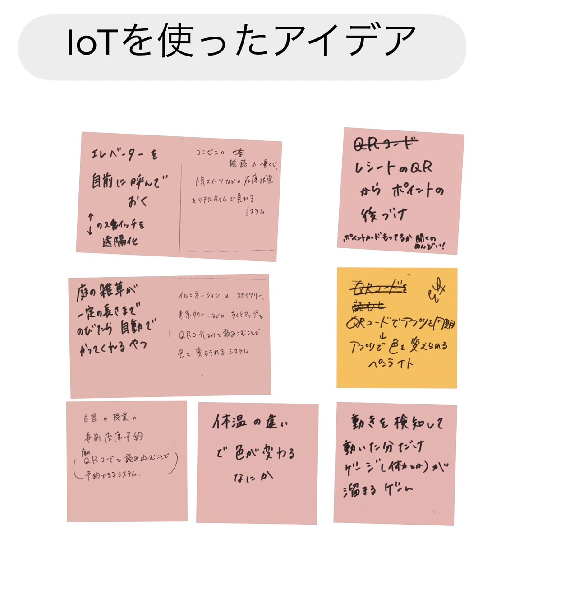
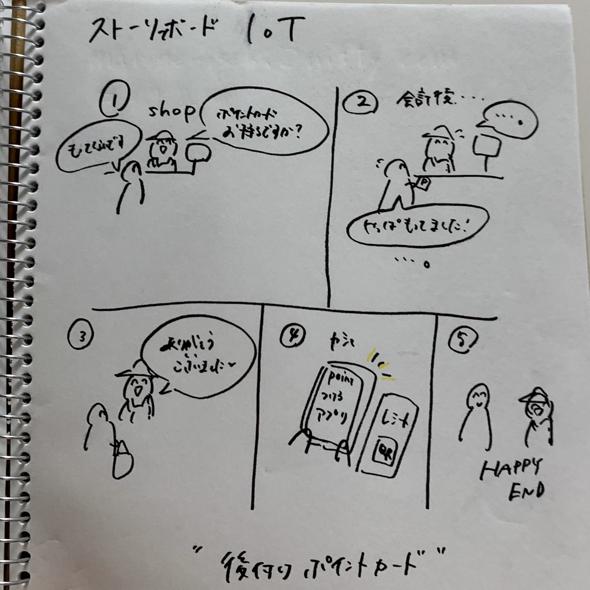

IoTを体験1
遠隔で操作、管理させることで、どのような新しいサービスを考えられるか？
IoTサービスのアイデア(グループワーク)

IoTサービスのアイデア「後付けポイントカード」
買い物をした際、お店によっては様々なポイントをつけることができる。
最近はポイントカードの電子化も進んでいるが、それでも持ってないと思っていたポイントカードが会計後に出てきたり、
店員側もその都度ポイントカードの有無を聞かなければならなかったりと、なかなか面倒である。
そこで、商品購入後にレシートに印刷してあるポイント付与用のQRコードを読み取ることで、
アプリで自分でポイントを付けられるサービスがあれば良いのではないかと考えた。
ストーリーボード

前のページに戻る